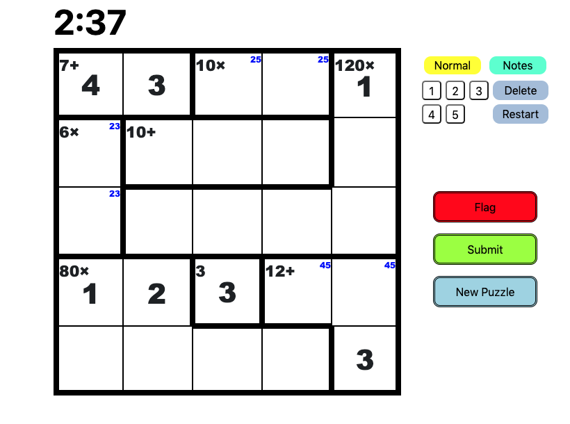

KenKenVS
Project Started in May 2020. kenkenpuzzle.com
Update as of January 24th, 2021: Single-player has been completely implemented. Multi-player is now in development. Release date TBD.
User Interface
Below is the current user interface when the user chooses to solve a puzzle. This includes all the functions that you
would come to expect from a UI.
Board
To create the board, the frontend receives a KenKen JSON from the backend that is then interpreted by a function that
constructs the actual HTML board that you see. This board allows the user to input numbers and notes using the toolbar
or the keyboard. I have inputted a few numbers and notes as an example.
Note: The board prevents the user from entering numbers outside the range of 1 <= x <= dimension.
Toolbar
-
Normal/Notes: These buttons can be toggled based on whether the user wants to put notes in the grid or numbers.
Only one can be selected at once.
-
Keypad: The keypad can be used instead of the keyboard to input numbers or notes. Only numbers between 1 and the
dimension of the puzzle appear on the puzzle because these are the only valid numbers in the puzzle.
-
Delete: Deletes all elements of a selected cell (can select a cell by clicking on it, confirmation when highlighted).
-
Restart: Resets all progress (does not restart the timer). Prompts a confirmation popup.
Buttons
-
Flag: Flag is only present in single-player. The purpose of flag is so that users can flag a puzzle that has any
issues (multiple solutions for example) before they are added to the competitive multiplayer pool.
-
Submit: When clicked, provides feedback based on accuracy, speed, and compares you to your opponent if in
multiplayer.
-
New Puzzle: Prompts a popup where users can select a new puzzle.

KenKen Generation
Our KenKen database is filled with our own generated puzzles. There are three components to this generation: Latin Square
Generation, Cage Generation, Operation Generaion. Together, these three create a random KenKen.
Latin Square Generation
As a reminder, a latin square is a square of size x such that each number 1 - x appears exactly once in each column and
row. Given dimension x, we first randomly sort a list of numbers from 1 to x. I'll use 6 as an example for the remainder
of this section, but the process is the same for any dimension.
Then, we fill in each subsequent row of the board with an offset of 1 to ensure that we create a Latin Square in the
process.
| 3 | 1 | 6 |
5 | 4 | 2 |
| 1 | 6 | 5 | 4 | 2 | 3 |
| 6 | 5 | 4 | 2 | 3 | 1 |
| 5 | 4 | 2 | 3 | 1 | 6 |
| 4 | 2 | 3 | 1 | 6 | 5 |
| 2 | 3 | 1 | 6 | 5 | 4 |
Observe that if we switch any two rows or columns, we are still left with a latin square. Therefore our next step is
to randomly swap rows and columns. This then leaves us with a random latin square like the one below.
| 4 | 3 | 2 |
1 | 6 | 5 |
| 3 | 6 | 1 | 4 | 5 | 2 |
| 6 | 4 | 5 | 2 | 1 | 3 |
| 5 | 2 | 6 | 3 | 4 | 1 |
| 1 | 5 | 3 | 6 | 2 | 4 |
| 2 | 1 | 4 | 5 | 3 | 6 |
Cage and Operation Generation
To generate cages, we start in the top left corner of the grid, then randomly "snake" until the snake has nowhere to move.
We then restart the snake at a random point then repeat the process. The snakes are then partitioned based on
predetermined distributions and these partitions are the cages. For each cage, an operation is generated based on a set
distribution. These distributions are chosen whether subtraction and/or division is valid for a cage (addition and
multiplication are always valid).